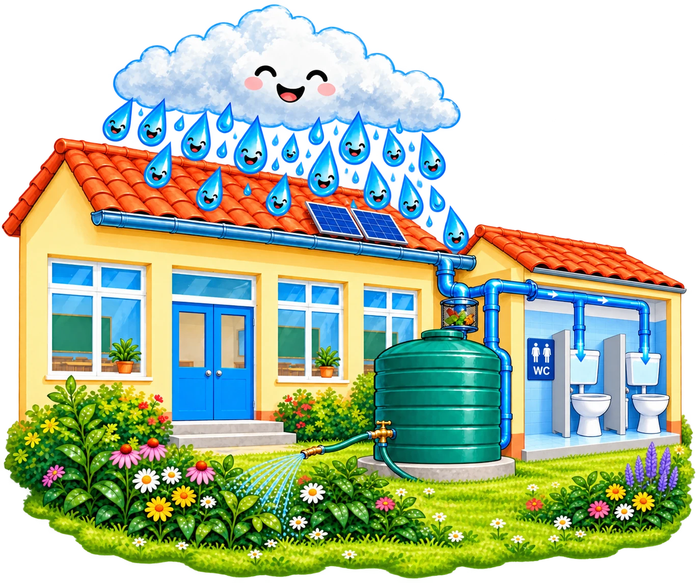
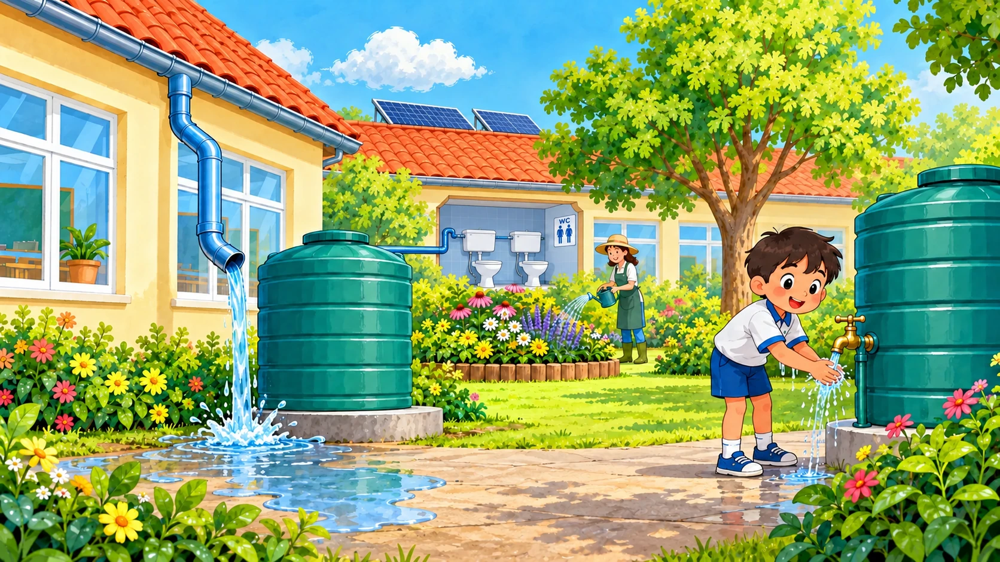
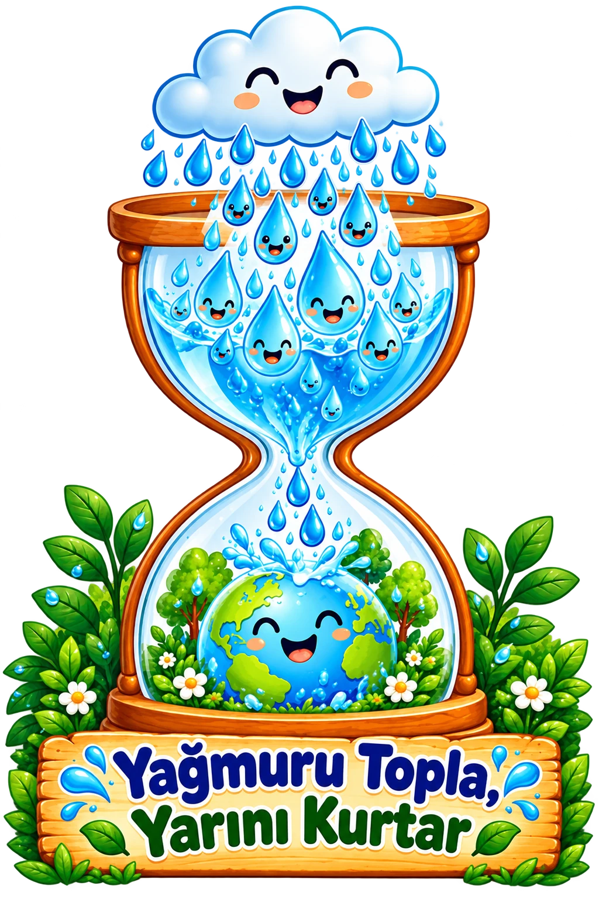

Bir damlanın peşindeyiz
Sunumumuzda suyun çatıdan bahçeye, klozet sifonlarına ve okul temizliğine uzanan yolunu keşfediyoruz.
Hikâyeyi izle ↗Bir yağmur damlası dünyayı değiştirebilir mi?
Bizce birlikte yapabiliriz! Suyu korumak için
çıktığımız bu yolculukta sen de bize katıl.

BULUTTAN KULLANIMA
Yağmur suyu hasadı, yağmuru toplamak ve
daha sonra uygun işlerde kullanmak demek.
Gelin, bu küçük yolculuğu birlikte keşfedelim.
İlk durak: çatı! Yağmur damlaları çatıya düşer. Çatının eğimi, suyu oluğa doğru taşır.
Bir durağa dokun ↑Bu çizimler örnek bir sistemi anlatır. Kurulum, bakım, sulama ve temizlik yetişkinler tarafından yapılır. Toplanan su içilmez; süzgeç suyu içilebilir hâle getirmez.
BİZ KİMİZ?
Biz, Antalya Konyaaltı’daki Özpınarlar Fahrettin Sert İlkokulu 4. sınıf öğrencileri olarak suyu korumak için bir aradayız!
Öğretmenlerimizin rehberliğinde su tasarrufunu ve yağmur suyu hasadını keşfetmek için bir araya geliyoruz. Sorular soruyor, fikirler üretiyor ve öğrendiklerimizi paylaşıyoruz.
MİNİ OYUN · DAMLA’YA YARDIM ET
Kapalı depoda topladığımız yağmur suyuna
uygun görevleri keşfet.
Bir seçenek seç. Birden fazla uygun kullanım var!
DAMLA’NIN GÖREVLERİ
Üç görev, bir amaç: suyu birlikte korumak.
Damla’yı sulama, klozet sifonu ve temizlik için kullanım noktasına ulaştır.
Görevi başlat →
GÖREV 02Su dedektifi ol. Resimdeki iki yanlışı keşfet.
Görevi başlat → GÖREV 03Altı soruyu cevapla, her cevapta yeni bir şey öğren.
Görevi başlat →PROJE GÜNLÜĞÜMÜZ
Bu köşe, birlikte üreteceğimiz
çizimler ve keşiflerle büyüyecek.
Sunumumuzda suyun çatıdan bahçeye, klozet sifonlarına ve okul temizliğine uzanan yolunu keşfediyoruz.
Hikâyeyi izle ↗Su tasarrufu afişlerimiz ve kendi çizimlerimiz için burada yer ayırdık.
Çalışmalarımızla dolacakÖğretmenimizle yapacağımız gözlemleri ve öğrendiklerimizi burada paylaşacağız.
Yeni keşiflere yer varBİRLİKTE, DAMLA DAMLA
Yolculuğumuza eşlik ettiğiniz için teşekkür ederiz.
